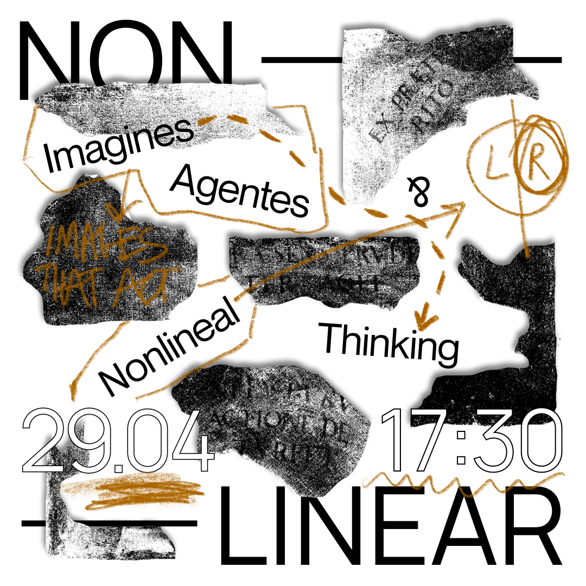
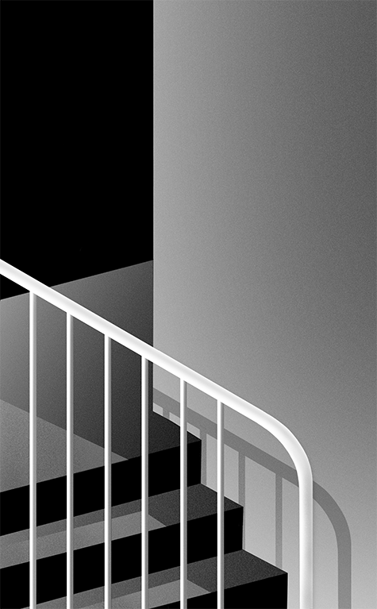
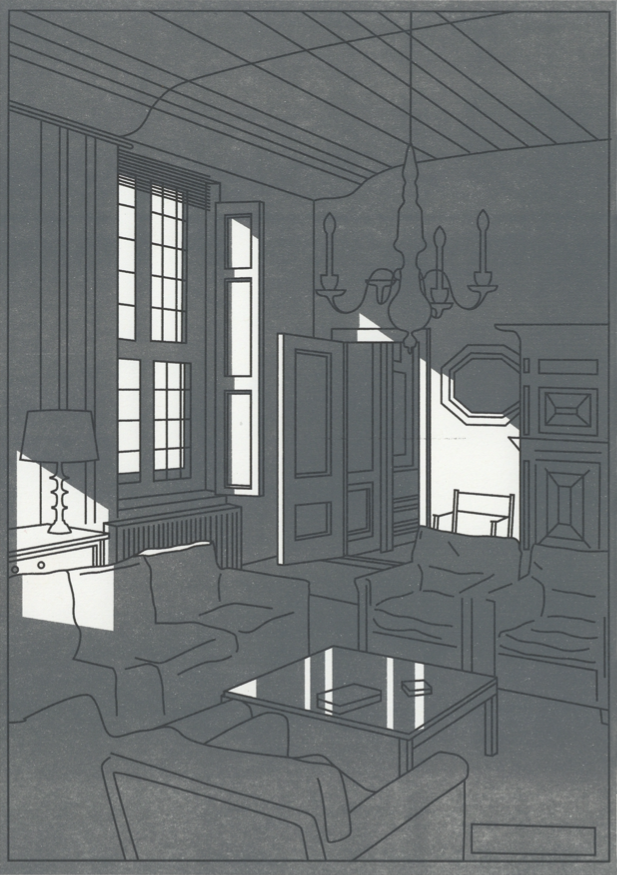

1/5

2/5

3/5

4/5

5/5

The design of this catalogue is a reflection on the selection made by the student jury of art academies of The Netherlands. The selection of 2016 books revealed a lot on how our perception and approach in design of printed matter is being influenced by the electronic media. The concept of 'Browsing Through the Book', as well as its title, is based on the interplay between these very different mediums. The structure of the catalogue is referring to the offset print sheet layout. The Japanese binding technique is used to display the 'metadata' hidden behind the creation of each book. Photographs used to show the books were found online. Repeating key words in the text are 'hyperlinked' through the book.
Offset print, edition of 250